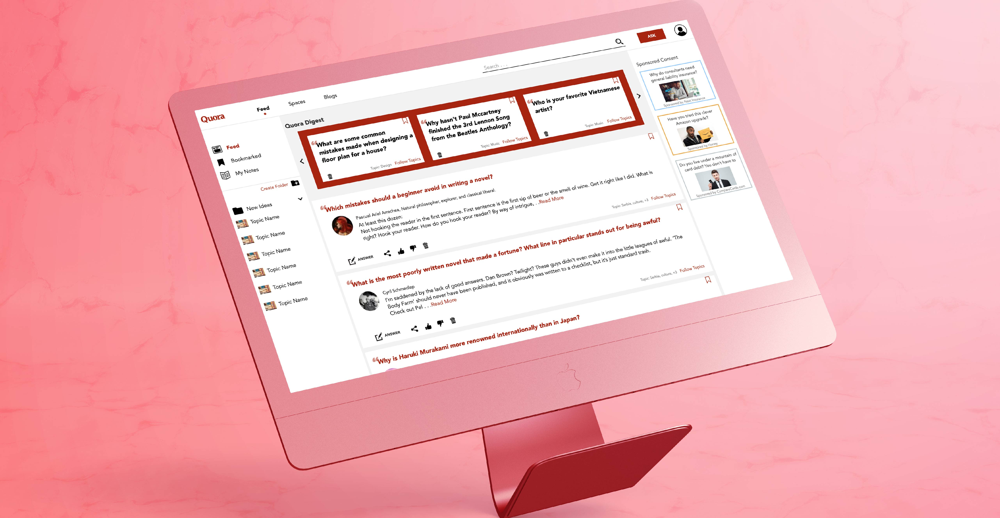

QUORA REDESIGN
An unsolicited redesign of the Quora Platform targeting specific user groups
My Role
User Research, ideation, UI/UX design
Duration
2 months
The Goal
To identify opportunities for improvement in Quora through research and propose workable solutions.
Research
I started with trying to identify potential opportunities for improvement through research. Some methods I used:
Going through reviews by other users and forums where they were discussing Quora.
Going through the Quora platform itself.
Conducting informal interviews understand what users use Quora for and what issues, if any, they have.
Identifying User Groups and Roles
Using the research and insights I created a process map to clearly define the different user roles and the kinds of actions they would perform on the platform. This helped identify areas where issues could significantly impact select user groups.

Personas
from among the many kinds of users I chose to focus my redesign efforts on 2 major but related personas:
The Browser
The Researcher
Opportunities Identified
Missed Opportunities
Poorly accessible blogging functionality
Irrelevant feed content
Additional Opportunities
Allowing saving of essential content and note-taking
Improving how related content can be discovered
Wireframing the Solution
Based on the opportunities identified I worked on wireframes which I used to get feedback. Through each iteration of changes I also increased the fidelity until the final design.
Final Design
Following feedback received from wireframes the final designs were developed. The major aspects are described below.
Redesigned Feed
Separated sponsored and suggested content to allow users to read based on interest. Content shown will be based on history and liked topics and questions.
Filter Content
Topics can now be filtered further based on specific interests allowing users to read more relevant content.
Related Topics
New representation for related topics easily allows users to identify possible relevant information more easily.
Blog Accessibility and Search Suggest
Blog content is made accessible from multiple loctions - top bar in feed, search and from within topics. Also improved search to show content suggested in different categories.
New Actions
Can browse through related questions based on current and previous searches without having to scroll all the way to the bottom. Can also take notes and highlight content for later use.
Notes
Complete view of all the notes and highlights created to quickly scan through important content.
See next project
Peppercorn Discovery Program